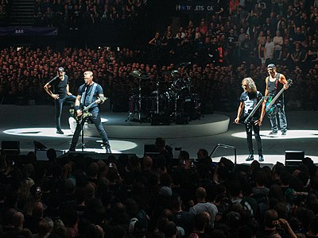

Ben Gizem. Yönetim bilişim sistemleri 3.sınıf öğrencisiyim.
En sevdiğim müzik grubu Metallica'dır.
1981 yılında kurulan Amerikalı heavy metal grubudur.
Metallica Grubu 
Bu link sizi Metallica'nın sayfasına götürecek wikipedia Metallica